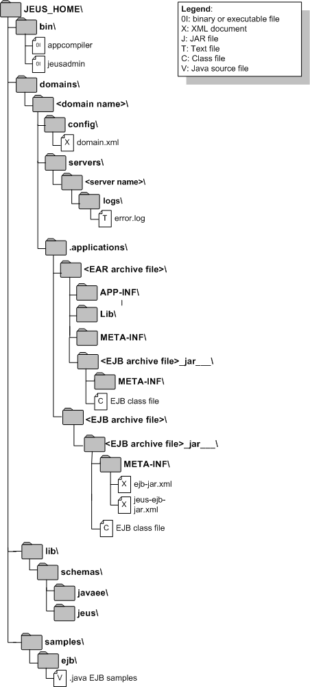

본 장에서는 EJB의 구성 요소와 특성, 그리고 간단한 설치와 환경설정 방법에 대해서 설명한다.
JEUS는 JSR 345 Enterprise JavaBeansTM 3.2(이하 EJB 3.2)을 지원하고 있다. EJB 3.2 표준(이하 EJB 표준)은 복잡하고 중요한 고성능의 비즈니스 로직을 개발할 때 개발자의 노력을 최소화하면서도 이식성이 뛰어난 비즈니스 컴포넌트를 작성할 수 있는 구조를 기술하고 있다.
EJB 3.2에 따르면 EJB의 정의는 다음과 같다.
"EJB 아키텍처는 객체지향 분산 엔터프라이즈 애플리케이션의 개발 및 분산 배치를 위한 컴포넌트이다. EJB로 작성된 애플리케이션은 확장성, 트랜잭션 처리 그리고 동시 사용자 처리에 안전하다. EJB 스펙을 준수한 애플리케이션은 한 번 작성되면 어떠한 서버 플랫폼에도 배치된다."
JEUS는 위에서 언급한 "서버 플랫폼"의 역할을 담당한다. 본 안내서에서는 JEUS에서 구현한 EJB 구현체와 엔터프라이즈 환경에 필수적인 부가 기능에 대해서 설명한다.
더 자세한 스펙 구현 정보들은 "JEUS 소개"를 참조한다.
JEUS EJB는 클러스터링을 통한 성능과 안정성을 더하기 위해 JEUS는 표준 외에 2가지 추가 기능을 제공한다.
성능 개선을 위한 Load Balancing 기능
안정성 확장을 위한 Failover 기능
이 기능들을 사용하려면 2개 이상의 Managed Server(이하 MS)가 클러스터로 구성되어 있어야 한다.
EJB 클러스터링에 대한 자세한 내용은 “제6장 EJB 클러스터링”을 참고하고, MS 클러스터링에 대한 자세한 내용은 “JEUS Domain 안내서”의 “제5장 JEUS 클러스터링”을 참고한다.
다음은 EJB 구현체의 주요 구성 요소에 대한 그림이다.
EJB 3.2에서 설명하는 EJB 컨테이너에 해당하는 것으로 deploy된 EJB 모듈의 실행 환경을 제공한다. 자세한 내용은 “제2장 EJB 엔진”를 참고한다.
각각의 EJB 컴포넌트를 그룹화하고 관리할 수 있는 단위이다. JEUS에서는 EJB 컴포넌트를 deploy하고 제어할 때 EJB 모듈을 기본 단위로 하므로, EJB 모듈은 반드시 하나 이상의 EJB 컴포넌트를 포함하고 있다. 자세한 내용은 “제3장 EJB 모듈”을 참고한다.
EJB 모듈 내에 속해 있으며 실제 비즈니스 컴포넌트를 의미한다. 각 EJB 컴포넌트의 공통 특성은 “제4장 EJB의 공통 특성”을 참고한다.
EJB 컴포넌트는 다음과 같이 5가지 종류로 구분된다. 각 컴포넌트에 대한 자세한 내용은 각 장을 참고한다.
Stateless Session Bean : “제7장 Session Bean”
Stateful Session Bean : “제7장 Session Bean”
BMP Entity Bean : “제8장 Entity Bean”
CMP 1.1 & CMP 2.x Entity Bean : “제8장 Entity Bean”
Entity Bean은 EJB 3.0부터 JPA로 대체되었으므로 이에 대해서는 "JEUS JPA 안내서"를 참고한다.
JEUS EJB에 관련된 환경설정 요소들은 EJB에 관련된 디렉터리 구조와 EJB 설정 파일들, 각종 툴 등으로 구성된다. 또한 EJB와 관련된 시스템 프로퍼티들과 그 특성들도 설명한다.
다음은 JEUS EJB에 관련된 디렉터리들과 파일에 대한 설명이다.
|  |
관리자가 EJB를 관리할 때 사용할 수 있는 실행 스크립트들이 저장된다. 여기에는 jeusadmin, appcompiler 등이 있다.
현재의 JEUS 시스템의 주요 설정 디렉터리이다. 이 디렉터리에는 domain.xml 파일이 위치한다.
EJB 엔진의 로그 파일이 위치한다. EJB 로그의 파일 핸들러를 별도로 지정한 경우 별도의 파일로 생성된다. 핸들러가 없는 경우에는 서버의 로그 설정을 따른다.
도메인에서 사용하는 애플리케이션들의 Archive 파일이 복사되고 이 Archive 파일을 풀어 놓은 디렉터리가 위치한다. 애플리케이션의 Archive 파일과 풀린 디렉터리에는 EJB 구현 클래스들과 helper 클래스들이 포함되어 있다.
| 파일 | 설명 |
|---|---|
| <EAR archive file> | EAR application-id 이름의 디렉터리 아래에 EAR 애플리케이션의 구성 파일이 그대로 복사된다. |
| <EJB archive file> | EJB module-id 이름의 디렉터리 아래에 EJB 모듈을 구성하는 파일이 그대로 복사된다. |
EJB와 관련된 스키마 파일이 다음과 같이 디렉터리별로 위치한다.
| 하위 디렉터리 | 설명 |
|---|---|
| javaee | EJB와 관련된 모든 Java EE XML 스키마 파일들이 위치한다. |
| jeus | EJB와 관련된 모든 JEUS XML 스키마 파일들이 위치한다. |
여러 종류의 EJB들을 구현해 놓은 예제 코드들과 하위 디렉터리들이 포함되어 있다.
디렉터리 목록에서 사용된 "<", ">" 표현(예: "<server name>/”)은 그 사이에 사용된 문자들은 실제 시스템 설정 값으로 대체되어야 한다. 예를 들어 실제 시스템이 "server1"이라면 JEUS MS는 "server1"이라고 값이 설정되어야 한다. 그러므로 "<server name>/" 표현은 실제 시스템에서 "server1/"이라는 이름의 디렉터리로 대체되어야 한다.
다음은 JEUS EJB의 관리와 설정에 관련된 XML 설정 파일이다.
XML 설정 파일들의 내용은 반드시 표준, 즉 JEUS에서 정의된 XML 헤더로 시작되어야 한다. 각 설정 파일의 XML 스키마 파일은 JEUS_HOME/lib/schemas/jeus/ 디렉터리에 위치한다. 또한 Root Element는 JEUS XML 스키마의 namespace를 기존 name-space로 지정해야 한다.
EJB 엔진에 대한 설정을 한다. 자세한 설명은 "JEUS Server 안내서"와 “제2장 EJB 엔진”을 참고한다.
주 EJB 엔진 설정 파일이다. 자세한 설명은 EJB 3.2 스펙을 참고한다.
위치
META-INF\ 표준 JAR 파일 내의 구조
ejb-jar.xml의 XML 헤더
ejb-jar.xml의 XML 헤더는 EJB 표준에 포함되어 있다.
[예 1.2] XML 헤더 : <<ejb-jar.xml >>
<?xml version="1.0"?>
<ejb-jar version="3.2" xmlns="http://xmlns.jcp.org/xml/ns/javaee"
xmlns:xsi="http://www.w3.org/2001/XMLSchema-instance"
xsi:schemaLocation="http://xmlns.jcp.org/xml/ns/javaee
http://xmlns.jcp.org/xml/ns/javaee/ejb-jar_3_2.xsd">
jeus-ejb-dd.xml (jeus-ejb-dd.xsd)
JEUS EJB 모듈을 위한 JEUS Deployment Descriptors(이하 DD) 정보를 설정한다. 자세한 설명은 “제3장 EJB 모듈”을 참고한다.
본 안내서에서 사용되는 모든 태그 순서는 XML 스키마의 설정 순서대로 작성되어 있다. 태그 순서는 "JEUS XML Reference"를 참고한다. 그러나 실제 사용할 때는 순서를 제대로 지키기가 쉽지 않으므로 JEUS에서는 태그 순서를 자동으로 정렬해주는 기능을 제공한다. 그러므로 XML 설정 파일을 작성할 때 순서를 정확하게 지키지 않아도 무방하다.
위 파일들의 예제가 본 안내서에서 사용될 때에는 표준 헤더가 편의상 생략되어 사용되고 있다. 실제 XML 설정 파일에는 이 헤더들이 포함되어 있다는 것에 주의한다.
다음은 EJB 엔진, EJB 모듈 그리고 EJB 컴포넌트를 관리하기 위해 사용되는 툴이다.
콘솔 툴(jeusadmin)
JEUS 콘솔 툴은 EJB 엔진을 제어하고 모니터링하기 위해 사용된다. 자세한 내용은 “JEUS Reference Book”의 “4.2.7. EJB 엔진 관련 명령어”를 참고한다.
WebAdmin
WebAdmin은 JEUS의 GUI 기반의 관리 툴로 콘솔 툴에서 가능한 모든 작업을 지원한다. WebAdmin에 대한 자세한 내용은 "JEUS WebAdmin 안내서"를 참고한다.
EJB 2.x를 위한 appcompiler에 대한 설명은 “JEUS Reference Book”의 “4.3. appcompiler”를 참고한다.
본 절에서는 JEUS에서 EJB를 사용하기 위한 설치 단계를 설명한다.
다음은 server1이라는 이름의 서버에 EJB 엔진을 설정하는 과정에 대한 설명이다.
JEUS가 제대로 설치되었는지 확인하고, 환경변수를 확인한다.
Command 화면을 실행하고 JEUS_HOME/bin에서 다음과 같이 입력하면 DAS가 기동된다.
$ startDomainAdminServer -domain domain1 -u administrator -p passsword1 -verbose . . . [2016.08.06 21:33:15][2] [adminServer-1] [SERVER-0248] The JEUS server is STARTING. . . . [2016.08.06 21:33:16][3] [adminServer-1] [Security-0082] The JEUS security manager started. . . . [2016.08.06 21:33:16][3] [adminServer-1] [SERVER-0173] The JNDI naming server started. . . . [2016.08.06 21:33:28][2] [launcher-10] [Launcher-0034] The server[adminServer] initialization completed successfully[pid : 2380]. [2016.08.06 21:33:28][0] [launcher-1] [Launcher-0040] Successfully started the server. The server state is now RUNNING.
위에 보이는 [3]은 로그 레벨 중 CONFIG를 의미한다. 따라서 CONFIG 이상의 로그 레벨이 설정되어 있을 경우에만 확인 가능하다.
WebAdmin에서 [Servers] 메뉴를 선택하면 서버 목록 조회 화면으로 이동한다. 서버 목록에서 서버(MS)를 선택하면 서버 설정 화면으로 이동하고, [Engine] > [Ejb Engine] > [Basic] 메뉴에서 EJB 엔진에 대해 설정할 수 있다. 설정을 하지 않는 경우 기본값으로 동작된다.
JEUS에서 제공되는 툴을 통한 MS의 설정 변경은 DAS가 기동되어 있는 상태에서 가능하다.
다른 Command 화면에서 다음과 같이 명령을 실행한다(호스트 정보는 DAS의 정보이다).
$ jeusadmin -host localhost:9736
User name:
설치할 때 설정한 관리자의 사용자 이름과 패스워드를 입력한다.
User name: administrator Password:
Command 화면에서 다음과 같이 입력하고 실행하면 서버가 기동(Booting)된다.
$ startManagedServer -domain domain1 -server server1 -u administrator -p passsword1 -verbose ... [2016.08.07 14:10:10][2] [server1-1] [SERVER-0248] The JEUS server is STARTING. ... [2016.08.07 14:10:17][2] [server1-1] [SERVER-0248] The JEUS server is RUNNING.
help 명령을 입력하면 EJB 엔진에 대한 모니터링과 관리에 대한 명령어들을 조회할 수 있다.
[DAS]domain1.adminServer>help -g EJB
[ EJB]______________________________________________________________________
cancel-ejb-timer Cancels active EJB timers.
ejb-timer-info Lists the active EJB timers. If no options are
specified, a list of all EJB modules that
containtimers will be displayed.
modify-active-management Modify the active management configuration.
modify-check-resolution Set the check resolution of the EJB engine on the
server.
show-active-management Shows the active management of the EJB engine on
the server.
show-check-resolution Shows the check resolution of the EJB engine on
the server.
To show detailed information for a command, use 'help [COMMAND_NAME]'.
ex) help connect
종료하려면 Command 화면에 stop-server(서버 종료) → local-shutdown(DAS 종료) → exit(툴 종료)를 순서대로 입력한다.
[DAS]domain1.adminServer>stop-server server1 Server [server1] was successfully stopped. [DAS]domain1.adminServer>local-shutdown The server [adminServer] has been shut down successfully. offline>exit
전체 JEUS 시스템이 종료된다.
설치와 설정에 대한 자세한 내용은 "JEUS 설치 및 시작하기"와 "JEUS Server 안내서"를 참고한다.